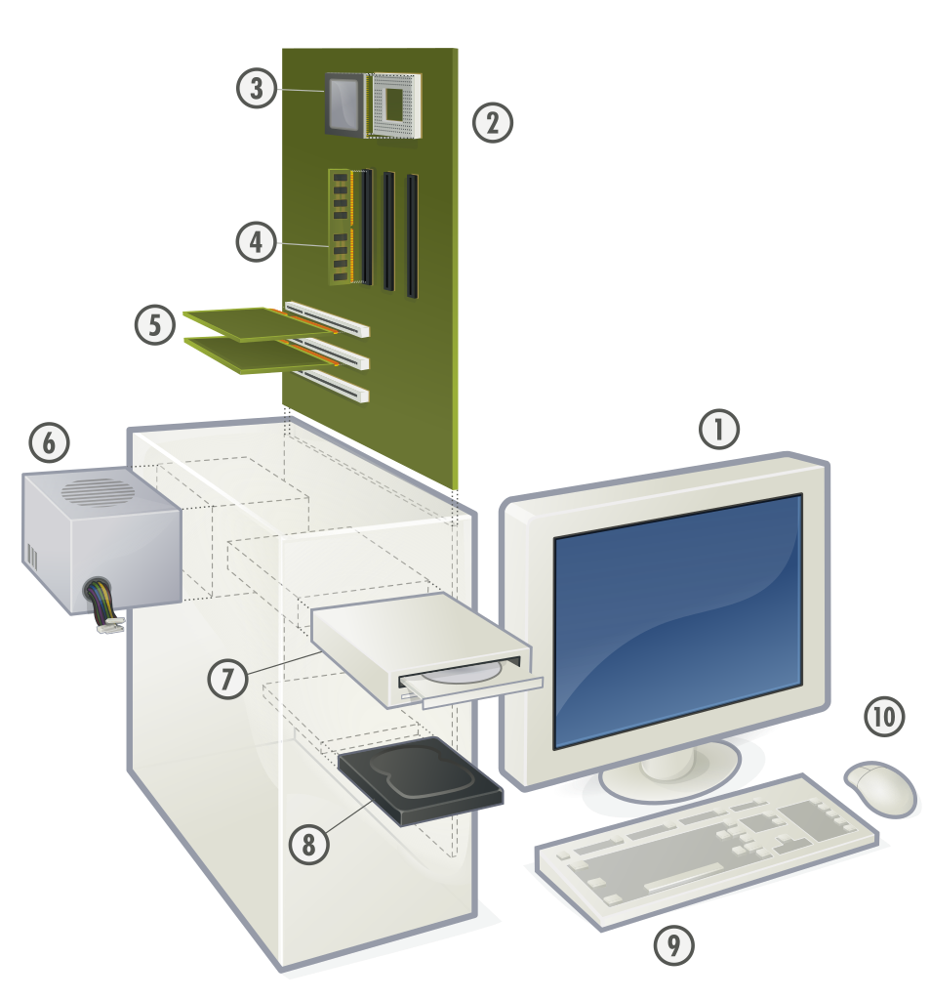
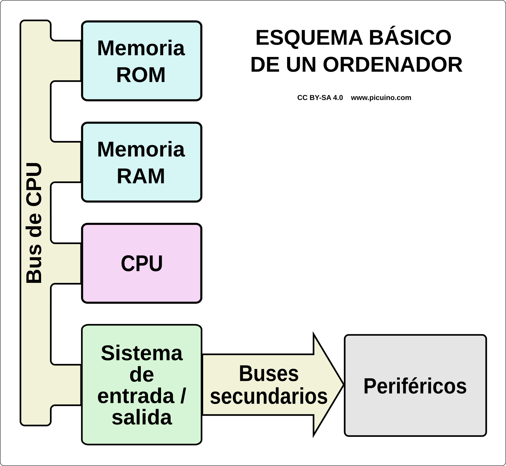
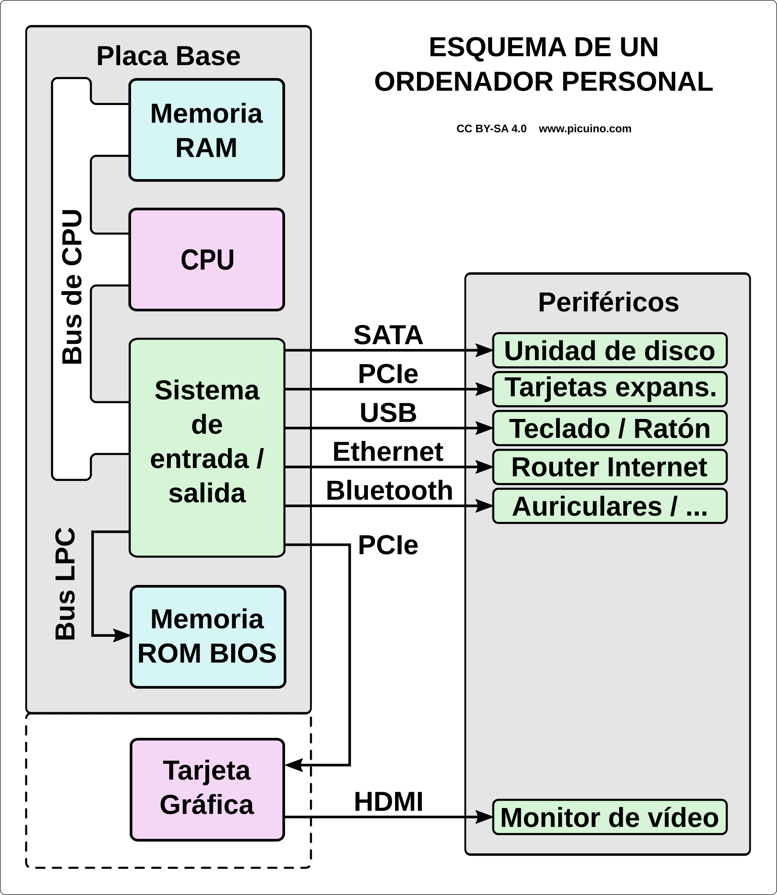

Maquinari d’ordinador personal¶
{kind=link}

Gustavb, CC BY-SA 3.0 Unported, vía Wikimedia Commons.¶
- Supervisar.
- Placa base.
- Microprocessador (CPU) i Zocalo.
- Mòdul RAM i ranures DIMM.
- Targetes d’expansió PCI i ranures.
- Alimentació.
- Unitat de disc òptic (CD, DVD, BD).
- Unitat de disc dur o unitat sòlida.
- Teclat.
- Mouse.
Esquema general d’un ordinador¶
Al gràfic següent podeu veure els elements principals d’un ordinador.
{kind=link}

Aquests elements són els següents:
La memòria ** ROM ** és responsable d’emmagatzemar programes i dades a llarg termini, fins i tot si l’ordinador està desactivat.
El ** Ram **, és responsable d’emmagatzemar programes i dades perquè el processador pugui treballar amb ells.
La ** CPU o la unitat de procés central ** és el "cervell " de l'ordinador, l'element que processa els programes i les dades.
El bus ** CPU ** és responsable de transportar les dades entre la CPU, la memòria i el sistema d’entrada/sortida.
El ** Sistema d’entrada/sortida ** connecta l’ordinador amb l’exterior i s’encarrega de transportar informació entre el bus CPU i diversos autobusos de connexió secundària, que solen ser estàndard, com ara USB, HDMI o Ethernet.
Els ** perifèrics ** són els responsables de realitzar 3 tasques fonamentals.
- Entrada de dades a l’ordinador (per exemple, un teclat)
- Sortida de dades de l'ordinador (per exemple, una pantalla)
- Emmagatzematge extern (per exemple, una memòria USB)
La figura següent representa l’esquema d’un ordinador personal.
{kind=link}

En aquest cas, la memòria ROM, barata i de baixa velocitat està connectada a la CPU mitjançant el bus LPC de baixa velocitat. Quan s’inicia l’ordinador, la informació de ROM es transfereix a RAM, on s’executa el programa d’inici del PC.